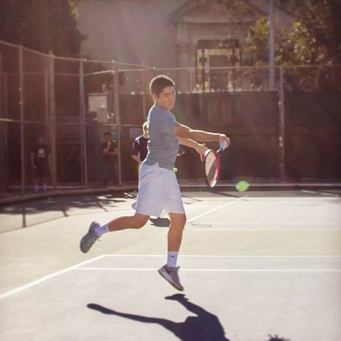
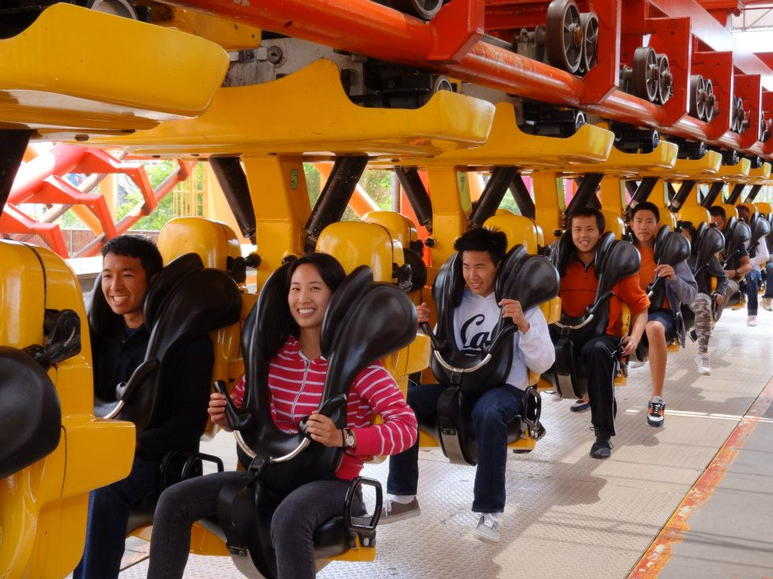

Since its establishment in 2003, Tennis at Cal (TAC) has expanded into the largest tennis club on campus with over 150 members and growing. The club is available to all members, with the only restriction being that you can't be afraid to have fun. TAC provides its members with experiences, lessons, and memories that will last a lifetime!

We hold optional practices three times a week and offer instruction to newer players just starting to set foot in the world of tennis. TAC also hosts three tournaments a year: Singles, Doubles and World Team Tennis. Starting this semester, we will also be implementing a semester-long ladder tournament as well (details on the tournaments page).

Anybody can join TAC at any time during the semester! Easy steps and instructions can be found under the announcements page. Joining Tennis at Cal is a great way to meet other tennis players, learn tennis, or improve your game. All skill levels are welcome! We hope to see you soon in the warm glow of the afternoon sun and cool breeze of the evening floodlights.
If you have any questions or concerns, feel free to contact us at: information@berkeleytac.com
For more information, updates, or people to hit with, join our Facebook page at: TAC Facebook